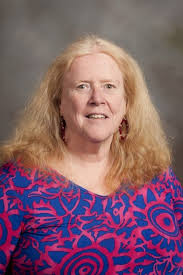

Intro to Science Fiction ~ Leslie Neilan
Course Description:
This course is and online, reading intensive course that introduces students to the genres of science fiction and fantasy, with a main focus on technology, the role of the hero, and providing insight into moral and cultural challenges. Students are asked to consider various complex and profound issues concerning social and technological change. Contemporary science fiction combines the perspectives of science, history, psychology, and sociology to examine the transformation of individual identity as a response to scientific discoveries and technological developments. Fantasy deals with less-technological worlds that are very concerned with the impact that magic has on our lives and morality.
Meet My Professor:
Originally from New York, professor Nielan received her Associate degree from Bronx Community College, and her Bachelor of Arts from Binghamton University. Following her schooling in New York, She obtained her Master's degree from Virginia Tech and became an expert in short fiction, science fiction/fantasy, shakespeare, technical writing, and detective fiction. She devotes a lot of her time teaching various introductory literature courses at Virginia Tech. She finds theses courses particularly rewarding because she is able to expose students to multiple types of literature that they may not have read otherwise.
My Opinions:
Initially my decision in taking this course was based on a requirement, but once I started the work I developed a greater appreciation for this type of literature. I am really enjoying the readings and I feel that this course was able to open my mind to appreciate more creative ideas and alternative ways of thinking.
